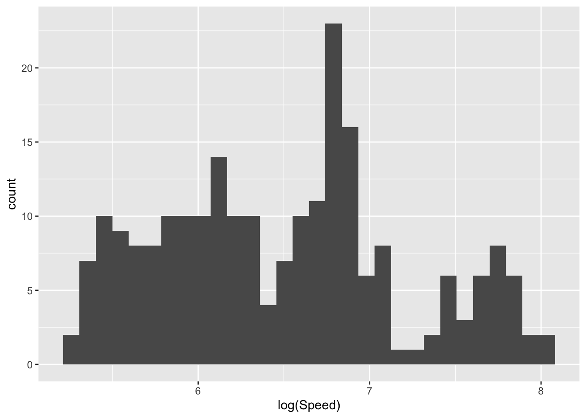
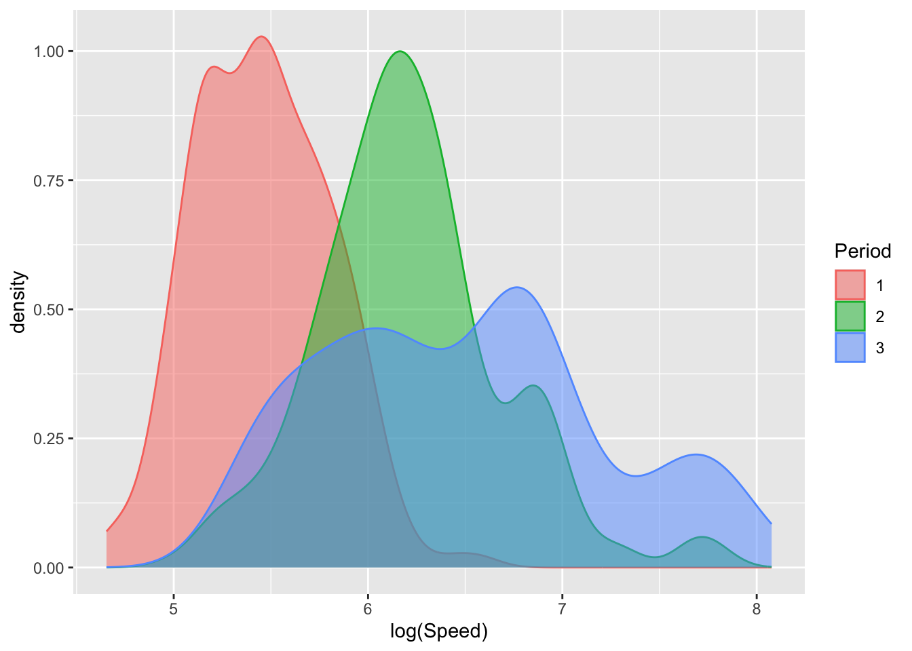
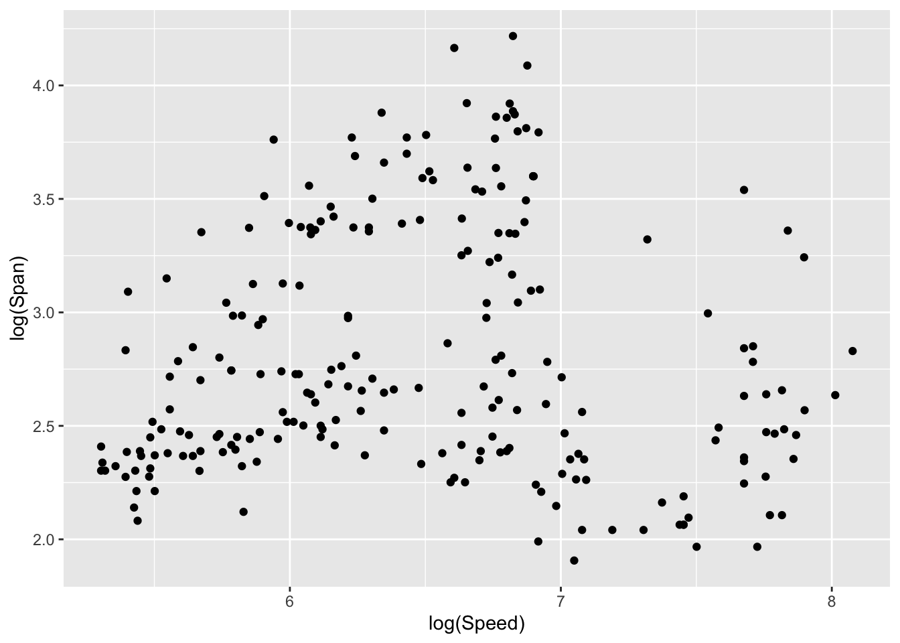
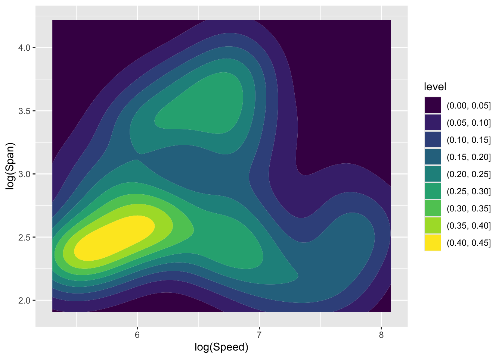
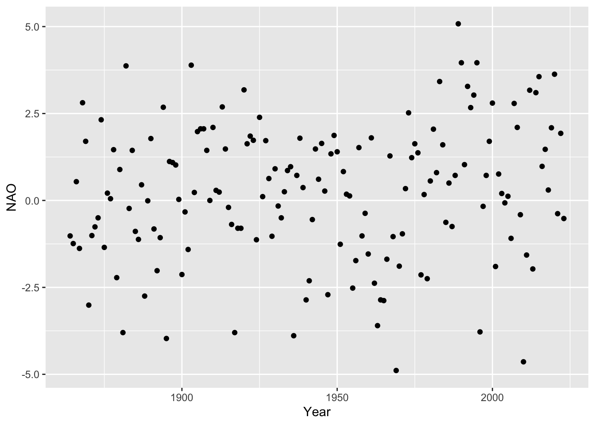
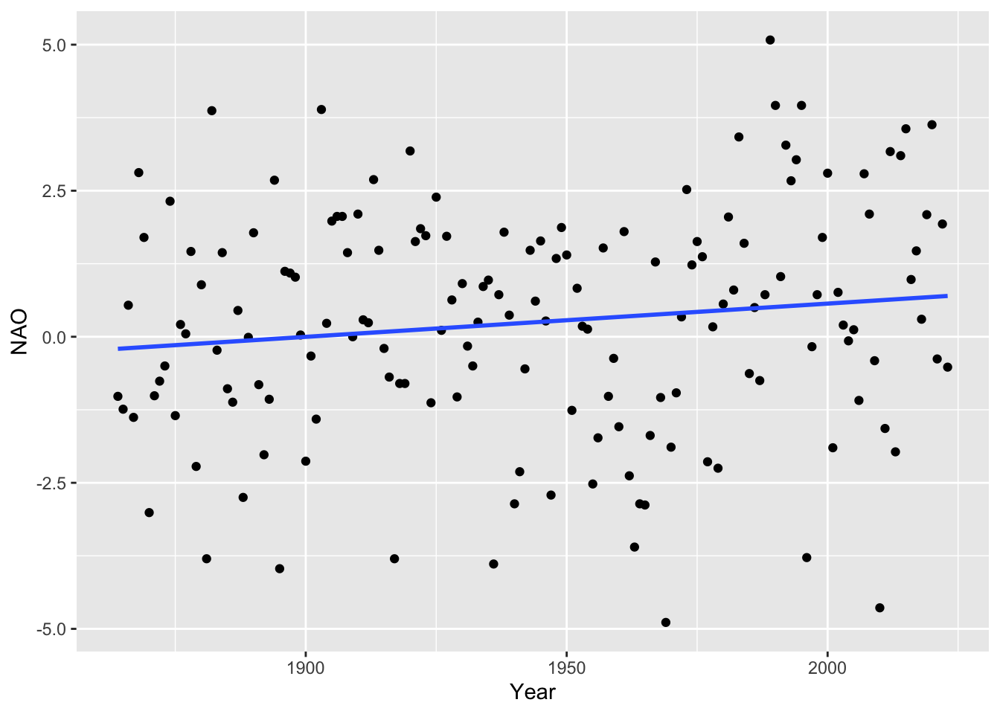
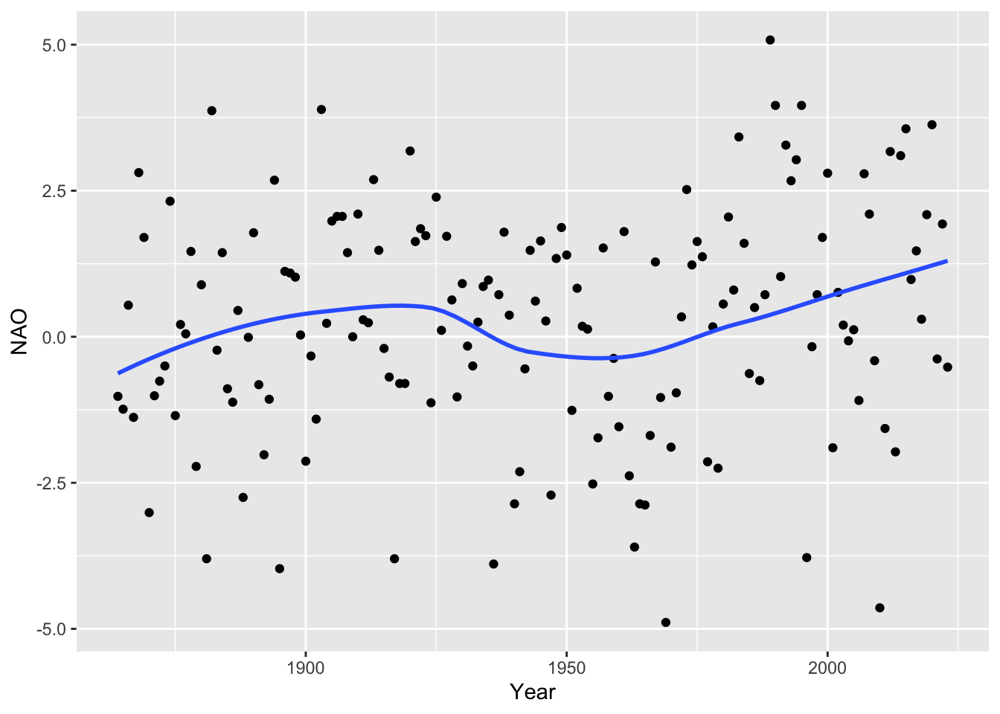
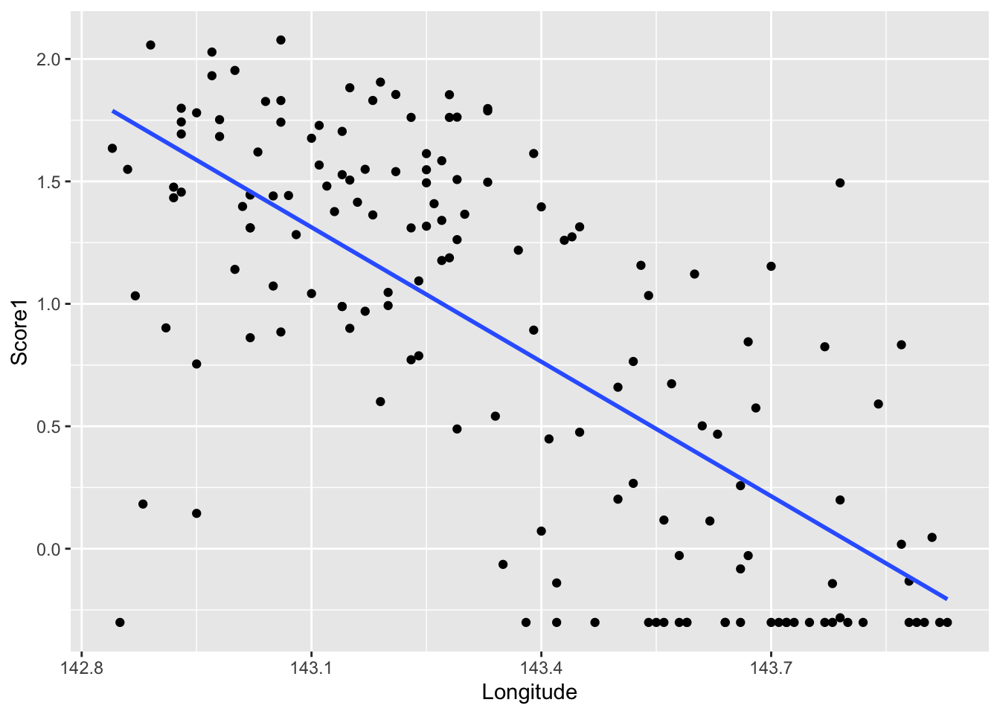
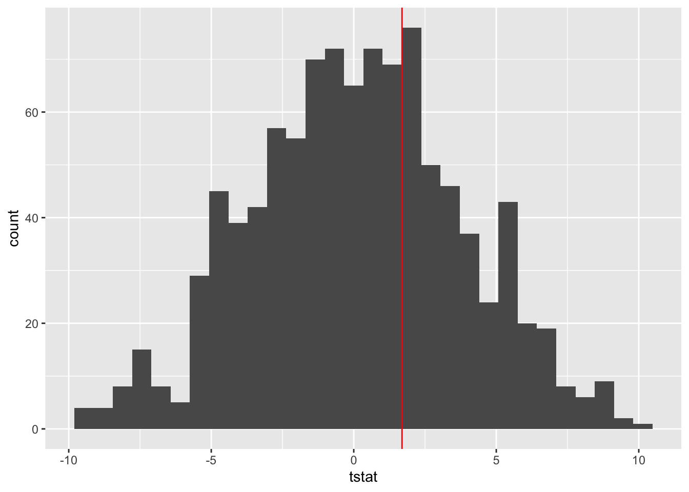
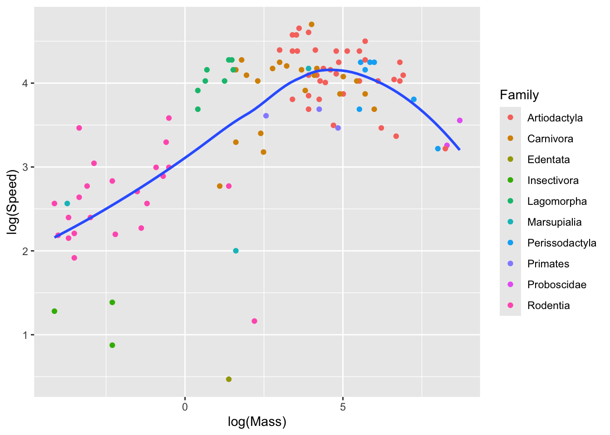

5 Trends and patterns
It sometimes happens that there are trends patterns within a dataset but that these are obscured by a large degree of variability (noise). With large datasets, trends and patterns are hidden by ‘overplotting’ when every data point is displayed. The methods of this chapter aim to highlight underlying trends and patterns in a flexible manner, without imposing any assumptions on the nature of these trends and patterns apart from ‘smoothness’.
5.1 Density estimation
In statistical modelling, principal interest often lies in mean values or model parameters. However, there are some situations where the shape of the variation is itself the focus of attention. Here is an example on the development of aircraft technology.
Example: The development of aircraft technology
How did aircraft technology develop during the 20th century? Jane’s (1978) documents aircraft design for the first three quarters of the century. Saviotti and Bowman (1984) developed methods to track the evolution of these designs, using simple physical characteristics:
- total engine power (kW);
- wing span (m);
- length (m);
- maximum take-off weight (kg);
- maximum speed (km/h);
- range (km).
The data are available in the
aircraftdataframe in thesmpackage. The year (Yr) of the first appearance of each design is also provided, along with a broad categoriation (Period`) into three periods (1 - 1914-1935, before the Second World War; 2 - 1936-1955, across the Second World War and its immediate aftermath; 3 - 1956-1984, the post-war period)
A brief look at the data suggests that the six measurements on each aircraft should be expressed on the log scale to reduce skewness. The code below uses the across function inside mutate to apply the log function to all the data in the specified columns.
The left hand plot below shows a histogram of the Speed variable for Period 3, which corresponds to the years after the second World War. The pattern of variability shown in the histogram suggests that there may be multiple modes, although it is difficult to judge between systematic shape and the inevitable detailed variation.
library(sm)
library(tidyverse)
aircraft_log <- aircraft %>%
mutate(across(3:8, log), Period = factor(Period))
aircraft_log_3 <- aircraft_log %>%
filter(Period == 3)
The right hand plot above shows a histogram of the same data with minor changes in the settings: the intervals used for the histogram ‘bins’ have been specified through brks <- seq(5.2, 8.2, 0.1) and then passed to the histogram geometry by geom_histogram(breaks = brks). The width of the bins is very similar and the positions have simply been moved slightly to align with neat positions on the axis. The effect of this minor change on the detailed shape of the histogram seems surprisingly large. Other additions to this plot help in understanding why. A rugplot has been added at the bottom of the histogram by adding geom_rug(sides = 'b') to the ggplot layers. The gridlines placed over the plot (code not shown) highlight the fact that each observation has an associated ‘box’ placed over the interval in which the observation lies. As the placing of these intervals (or ‘bins’) changes, the boxes shift abruptly as observations fall in or out of different bins. This is a little unsatisfactory. From another perspective, it also loses a little information in the data as we throw away the precise location of each observation and use simply the location of the bin in which it lies.
One way of addressing this is to use boxes whose centres lie directly over each observation. A further modification is to replace the sharp edges of the box with a smooth shape (referred to as a kernel function) which will blend the information across the dataset to create a smooth pattern. The left hand plot below illustrates this (code not displayed) using a small sub-sample of the data so that the effects of each observation can be seen. When the kernel functions over the observations are added together, a smooth pattern emerges. This is referred to as a density estimate as it reflects the density of data across different locations on the axis. The right hand plot apples this to the full sample, through the geom_density() layer, resulting in a smooth representation of the underlying pattern.
aircraft_log_3 %>%
ggplot(aes(Speed)) + geom_density() +
xlim(4.5, 8.5) + xlab('log(Speed)') + geom_rug(sides = 'b')There remains the issue of choosing a bandwidth to control the smoothness of the density estimate, through the breadth of the kernel function. If this is not specified, geom_density tries to make a good choice, but it can be valuable to look at the effects of applying different levels of smoothing. This question is the early manifestation of an issue which will reappear often in later discussions of model building, namely how complex should a model be. At this stage, in the simple setting of exploring data visually, the issue is not a pressing one. Indeed it is perfectly reasonable to view the data at different levels of smoothness to inspect the patterns which emerge at different scales. Approaches to decisions on complexity will be deferred to Chapter 12.1 in the context of more extensive model building.
aircraft_log_3 %>%
ggplot(aes(Speed)) +
geom_density(aes(linetype = "0.2"), bw = 0.2) +
geom_density(aes(linetype = "0.1"), bw = 0.1) +
geom_density(aes(linetype = "0.5"), bw = 0.5) +
xlim(4.5, 8.5) + xlab('log(Speed)') + geom_rug(sides = 'b') +
scale_linetype_manual(name = "bandwidth",
values = c("0.2" = "solid", "0.1" = "dashed", "0.5" = "dotted"))An interactive display which allows animation across different levels of smoothing is available in sm.density function from the sm package.
One advantage of density estimates is that it is a simple matter to superimpose these to allow different groups to be compared. Here the groups for the three different time periods are plotted using colour fill (fill) and transparency (controlled by alpha which lies between 0 and 1) to enhance the comparison. There is a systematic movement to higher speeds from period 1 and 2 while in period 3 further increases may be specialising into particular designs, reflected in the multiple modes.
aircraft_log %>%
ggplot(aes(Speed, col = Period, fill = Period)) +
geom_density(alpha = 0.5) + xlab('log(Speed)')
There are other ways in which density estimates can be displayed. The plots below use density ridges (Wilke 2023) and violin plots (Hintze and Nelson 1998) to display the information in innovative ways. The sina plot from the ggforce package uses jitter to separate the observations vertically, with the width of jitter controlled by the denisty estimate. This provides a display which achieves an attractive combination of raw data and underlying trend.
library(ggridges)
library(ggforce)
ggplot(aircraft_log, aes(Speed, Period)) +
geom_density_ridges() + xlab('log(Speed)')
ggplot(aircraft_log, aes(Speed, Period)) +
geom_violin() + xlab('log(Speed)')
ggplot(aircraft_log, aes(Speed, Period)) +
geom_sina() + xlab('log(Speed)')The idea of density estimation extends very naturally to a wide variety of other types of data and sample spaces. For example, in the case of two-dimensional data on continuous scales, a smooth two-dimensional kernel function is placed over each observation and these are accumulated to provide a smooth two-dimensional density estimate. The plots below show Speed and Span from period 3 of the aircraft as a scattterplot and two forms of density estimate displays.
ggplot(aircraft_log_3, aes(Speed, Span)) +
geom_point() + labs(x = 'log(Speed)', y ='log(Span)')
ggplot(aircraft_log_3, aes(Speed, Span)) +
geom_density_2d_filled() + labs(x = 'log(Speed)', y ='log(Span)')
aircraft_log_3 %>% select(Speed, Span) %>%
smoothScatter(bandwidth = c(0.2, 0.2),
xlab = 'log(Speed)', ylab ='log(Span)')
As in the one-dimensional case, the sm.density function from the sm package allows the effect of different bandwidths to be explored dynamically.
Finally, here is a comparison of the patterns of Speed and Span across the three periods, showing the evolution of these aspects of the designs.
5.2 Flexible regression
Example: the North Atlantic Oscillation
The North Atlantic Oscillation is an important atmospheric indicator which is linked to weather patterns. It is based on the difference in atmospheric pressure at sea level between Iceland and Portugal. Historical data on Winter NAO are available from the Natioanl Center for Atmospheric Research in the USA. A description of the dataset is available.
library(tidyverse)
path <- rp.datalink("NAO")
NAO <- read.table(path, header = FALSE, skip = 1) %>%
select(Year = 1, NAO = 2)
p <- ggplot(NAO, aes(Year, NAO)) + geom_point()
p
p + geom_smooth(method = 'lm', se = FALSE)
p + geom_smooth(se = FALSE)
The plots above show the data and then a simple linear regression line as a means of summarising trend. The third plot shows a curve which seeks to track the trend in the data over time in a more flexible manner. This is donw through kernel functions of the type used in density estimation. At any time point of interest, these are used to construct a weighted mean, where the weights diminish with the distance of each observation from the point of interest. (In fact, it turns out to be more effective to fit a straight line model with these weights and to report where this line sits at the point of interest.) The plot above was constructed by using a geom_smooth layer. This uses a locally weighted linear method known as loess whose smoothness is controlled by a span argument.
The flexible curve suggests more movement in the Winter NAO over time. However, we need to investigate whether this might be simply due to random variation or whether there is real evidence of decline. Discussion of this important issue will begin in Chapter 6. (This is the reason for setting se = FALSE above, for the moment.)
Example: Trawling near the Great Barrier Reef
Data are available from a survey of the fauna on the sea bed lying between the coast of northern Queensland and the Great Barrier Reef. The sampling region covered a zone which was closed to commercial fishing, as well as neighbouring zones where fishing was permitted.The variables are:
Zonean indicator for the closed (1) and open (0) zonesYearan indicator of 1992 (0) or 1993 (1)Latitudelatitude of the sampling positionLongitudelongitude of the sampling positionDepthbottom depthScore1catch score 1Score2catch score 2Interest lies in which of the explanatory variables affects the principal catch score (
Score1). The dataare available in thetrawldataframe in thesm` package.
A plot of Score1 against Longitude suggests a linear relationship, as a first approximation. However, there is no compelling reason that the trend should be linear anda more flexible curve highlights a different pattern. The Longitude variable is essentially a proxy for ‘distance offshore’ in this region and it may be that the mean score remains high for some distance offshore and then decreases rapidly. That has biological plausibility.
library(sm)
p <- ggplot(trawl, aes(Longitude, Score1)) + geom_point()
p + geom_smooth(method = 'lm', se = FALSE)
p + geom_smooth(se = FALSE)
You can experiment with this kind of model interactively by issing the instruction
sm.regression((trawl$Longitude, trawl$Score1, panel = TRUE)
This requires the rpanel and tkrplot packages to be installed.
The idea of creating flexible patterns by considering the data locally extends to other settings. In particular, this can be done with two covariates simultaneously. The code below uses the sm.regression function from the sm package to create a flexible surface which gives a description of how the mean catch score change across longitude and latitude simultaneously.
trawl1 <- filter(trawl, Year == 1 & Zone == 1)
Position <- cbind(trawl1$Latitude, -trawl1$Longitude)
sm.regression(Position, trawl1$Score1,
xlab = "-Latitude", ylab = "Longitude", zlab = "Score")
As a final example, we will revisit the rodent dataset was introduced in Section 2.2. In fact this is only part of a larger dataset on mammals, available in mammal_speed. Interestingly, the positive connection between mass and speed for rodents does not carry through for all mammals. For the heaviest mammals, speed stabilises and then tails off as mass increases. At what mass is speed heaviest, on average? A smooth curve description of the underlying relationship allows us to quantify this, without making any detailed assumptions on what the shape of this relationship should be. For the moment, we can simply inspect the plot to see that the maximum occurs at a mass around 4.5 on the log scale, and so exp(4.5) = 90 on the mass scale.
library(ggplot2)
path <- rp.datalink("mammal_speed")
load(path)
ggplot(mammalSpeed, aes(log(Mass), log(Speed))) +
geom_point(aes(col = Family)) + geom_smooth(se = FALSE)
5.3 Further reading
Bowman, A.W. and Azzalini, A. (1996). OUP: Oxford.
Green, P.J. and Silverman, B.W. (1994). . Chapman & Hall: London.
Hastie, T. and Tibshirani, R. (1990). . Chapman & Hall: London.
Ruppert, D., Wand, M.P. and Carroll, R.J. (2003). . CUP: Cambridge.
Wood, S. (2017) Generalized Additive Models: an introduction with R. CRC Press.
5.4 Exercises
5.4.1 Does conservation work?
A recent paper in Science by Langhammer et al. (2024) reviewed a large number of studies of conservation projects in order to evaluate what benefit these have brought. To allow comparisons among projects which have operated over different timescales, the principal response variable was the rate of improvement in the relevant outcome. This was expressed in a standardised ‘effect size’ scale. Links are available for the data and a description of the recorded variables.
- Read the data. The response variables of interest is in column 11. Rename this as ‘Effect size’.
- Construct a suitable plot to show how
Effect sizevaries across the different types ofInterventionconsidered. In particular, consider plots based on density estimation (geom_violin,geom_sina). What plot would you recommend?
5.4.2 The spatial distribution of laryngeal cancer (smoothing)
The lcancer dataframe in the sm package contains data which record the spatial positions of cases of laryngeal cancer in the North-West of England between 1974 and 1983, together with the positions of a number of lung cancer patients who were used as controls. The data have been adjusted to preserve anonymity. See the help file for details. It may be more convenient to divide the Easting and northing variables by 10000 to provide neater scales for plotting.
- Use the
cbindfunction to create a matrix which has two columns containing theEastingandNorthingvalues for the cases alone, and another to do the same thing for the controls. (You may need to consult the help file forcbind.) - Draw a density estimate for the cases by passing the first matrix to the sm.density function, with
display = "image". Experiment with different values of the argumenthwhich controls the degree of smoothing. This needs to be a vector of length two as there are two variables present. The valueh = rep(0.12, 2)should work reasonably well but experiment with others. - Superimpose a density estimate for the controls by calling
sm.densitywith the second matrix, withdisplay = "slice"and with the additional argumentadd = TRUEto superimpose contours on the plot. - Consider what the comparison of these two density estimates tells you.
5.4.3 Aircraft data
In the lecture notes, a density estimate of log(Speed) and log(Span) from the aircraft data , for the third time period, was found to be trimodal. Produce density estimates for the first two time periods and explore whether multimodality is also present there. (Hint: you may wish to consider whether facet_wrap might help.)
5.4.4 Radiocarbon data
This dataset refers to the calibration required with radiocarbon dating. The datset radioc is available in the sm package and details can be obtained by issuing the instruction ?radioc.
- Create a subset of the data which corresponds to
Cal.agebetween 2000 and 3000 years. Experiment with values of the smoothing parameterh, or equivalently the degrees of freedom parameterdf. (Ignore thePrecisioninformation at this stage.) - What happens as \(h\) becomes very large (or df becomes very small)?
- What level of smoothing would you chose to provide a good description of the calibration curve?
- What level of smoothing does the crossvalidation method suggest?
5.4.5 Follicle data
The follicle dataset is available in the sm package. This records information on the number of ovarian follicles counted from sectioned ovaries of women of various ages. See ?follicle for some details.
A variability band for the regression curve indicates the precision in the estimation of the curve at different locations. This can be constructed simply by adding the argument display = "se" to the sm.regression function call. Use this to identify features of the data which cause the changes in the width of the curve. Construct a density estimate to show how the density of the age information changes.